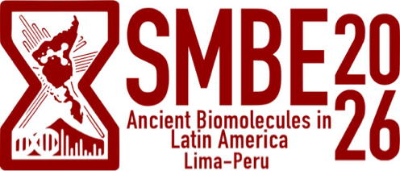
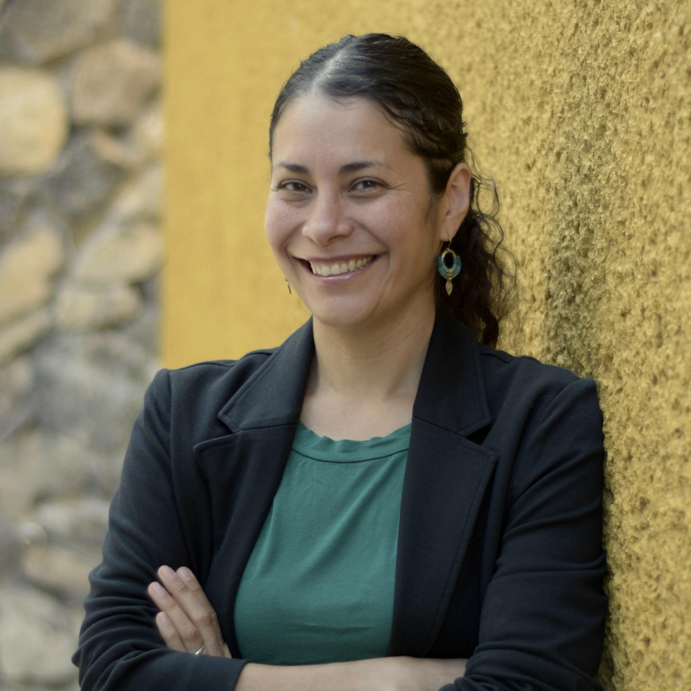
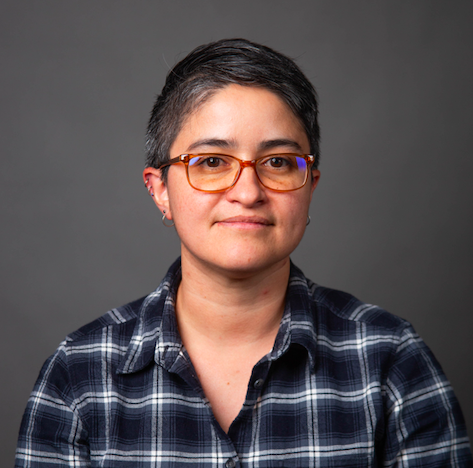
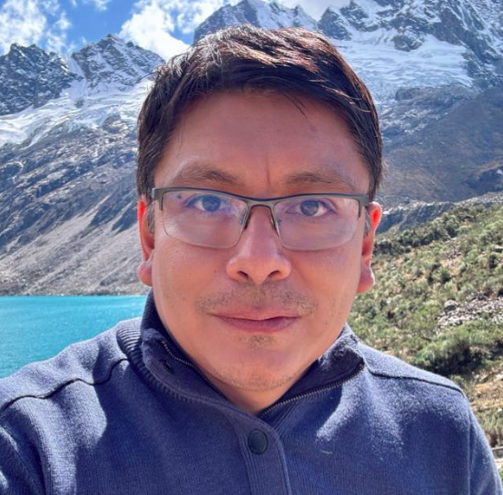
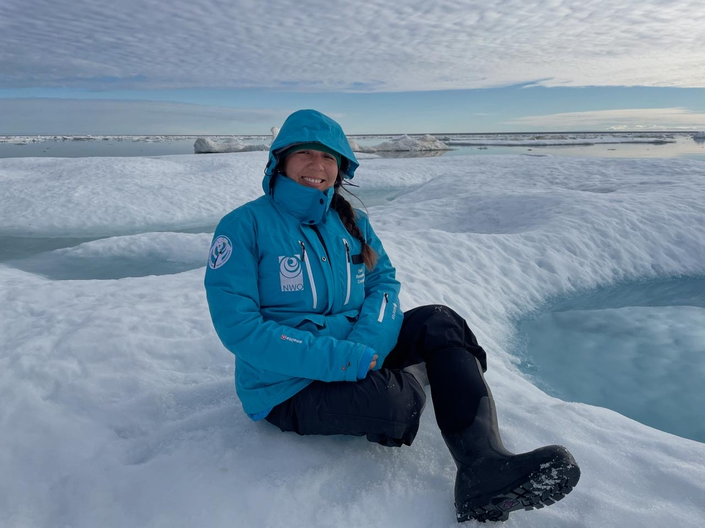

Biomoléculas Antiguas en Latinoamérica I
Reunión Regional del SMBE
Lima, Peru - Noviembre 04-06, 2026

El encuentro regional de Biomoléculas Antiguas en Latinoamérica tiene como objetivo reunir a investigadores que estudian el pasado mediante el análisis de biomoléculas antiguas, como el ADN y las proteínas, provenientes de contextos latinoamericanos. La rica biodiversidad y el patrimonio cultural de nuestras regiones las hacen clave para el estudio de biomoléculas antiguas. Varios sitios arqueológicos en nuestras regiones (muchos aún inexplorados) albergan un enorme potencial, ya que pueden proporcionar registros de la población de las Américas, la historia de las poblaciones locales antiguas, la domesticación temprana de cultivos y ganado, las prácticas culturales y el impacto genético de la colonización europea en humanos, especies domésticas y patógenos. Al liderar una investigación respetuosa con nuestro patrimonio y relevante para nuestros contextos sociales y ecológicos, los (as) investigadores(as) latinoamericanos(as) podemos ayudar a abordar y superar las disparidades en capacitación, infraestructura y colaboración que existen actualmente entre el Norte Global y nuestra región.
En la última década, investigadores(as) de Latinoamérica han establecido grupos de trabajo y laboratorios especializados para estudiar organismos endémicos, poblaciones y procesos regionales. Uno de los principales objetivos de esta reunión es fortalecer la capacidad local en la investigación de biomoléculas antiguas, permitiendo a los(as) científicos(as) latinoamericanos(as) reunirse en un espacio común y construir una red de colaboración internacional para contribuir a las tendencias globales desde nuestras perspectivas regionales únicas —rica biodiversidad, áreas geográficas complejas y patrimonio arqueológico—, a la vez que lideramos la investigación de forma independiente y promovemos la decolonización de la ciencia.
Animamos a estudiantes e investigadores(as) de diversas disciplinas a postularse y enviar sus resúmenes, independientemente de su formación en arqueología, biología, genómica u otros campos. La reunión está diseñada para aumentar nuestras redes y establecer colaboraciones para futuras investigaciones.

María C. Ávila Arcos
La Dra. María C. Ávila Arcos fundó en 2016 uno de los primeros laboratorios de paleogenómica en Latinoamérica, ubicado en Querétaro, México (LIIGH-UNAM), con el objetivo de investigar muestras antiguas a nivel local y desarrollar capacidades para estudios posteriores. Los primeros años de su laboratorio se centraron en el análisis de muestras humanas precolombinas; actualmente, el laboratorio de paleogenómica del LIIGH-UNAM se ha expandido para incluir el procesamiento de otros organismos como plantas y fauna antigua. Asimismo, el laboratorio se comparten con otros grupos de investigación en México y han recibido a estudiantes visitantes de otras regiones de Latinoamérica.

Constanza de la Fuente Castro
La Dra. Constanza de la Fuente Castro es investigadora en el Instituto de Ciencias Biomédicas de la Universidad de Chile. Su investigación se centra en el estudio de las poblaciones humanas antiguas de Chile y Sudamérica para responder a preguntas relacionadas con el poblamiento de América, así como a preguntas locales específicas de cada uno de los diferentes sitios arqueológicos de la región.

Frank Guzmán
El Dr. Frank Guzmán es investigador en la Universidad Peruana de Ciencias Aplicadas. Actualmente, dirige un proyecto sobre el legado agrícola de cultivos como el camote, la papa y la achira en Caral, la ciudad más antigua de América, desde una perspectiva genómica y cultural.

Emily Ruiz Puerta
La Dra. Emily Ruiz Puerta es investigadora postdoctoral en el Centro Ártico de la Universidad de Groningen e investigadora invitada en el Globe Institute de la Universidad de Copenhague. Su investigación se centra en la arqueología, el ADN antiguo (ADNa) y el análisis de isótopos.